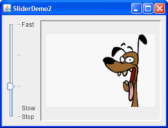

Use aJSliderto let the user easily enter a numeric value bounded by a minimum and maximum value. If the ability to specify precise numbers is important, a slider can be coupled with a formatted text field. If space is limited, a spinner is a possible alternative to a slider.Here's a picture of an application that uses a slider to control animation speed:
Try this:
- Run SliderDemo (it requires release 6) using JavaTM Web Start. Or, to compile and run the example yourself, consult the example index.
- Use the slider to adjust the animation speed.
- Push the slider to 0 to stop the animation.
SliderDemo.javathat creates the slider in the previous example.By default, spacing for major and minor tick marks is zero. To see tick marks, you must explicitly set the spacing for either major or minor tick marks (or both) to a non-zero value and callstatic final int FPS_MIN = 0; static final int FPS_MAX = 30; static final int FPS_INIT = 15; //initial frames per second . . . JSlider framesPerSecond = new JSlider(JSlider.HORIZONTAL, FPS_MIN, FPS_MAX, FPS_INIT); framesPerSecond.addChangeListener(this); //Turn on labels at major tick marks. framesPerSecond.setMajorTickSpacing(10); framesPerSecond.setMinorTickSpacing(1); framesPerSecond.setPaintTicks(true); framesPerSecond.setPaintLabels(true);setPaintTicks(true). Just callingsetPaintTicks(true)is not enough. To display standard, numeric labels at major tick mark locations, set the major tick spacing, then callsetPaintLabels(true). The example program provides labels for its slider this way. But you don't have to settle for these labels. Customizing Labels on a Slider shows you how to customize slider labels.When you move the slider's knob, the
stateChangedmethod of the slider'sChangeListeneris called. For information about change listeners, refer to How to Write a Change Listener. Here is the change listener code that reacts to slider value changes:Notice that ourpublic void stateChanged(ChangeEvent e) { JSlider source = (JSlider)e.getSource(); if (!source.getValueIsAdjusting()) { int fps = (int)source.getValue(); if (fps == 0) { if (!frozen) stopAnimation(); } else { delay = 1000 / fps; timer.setDelay(delay); timer.setInitialDelay(delay * 10); if (frozen) startAnimation(); } } }stateChangedmethod changes the animation speed only ifgetValueIsAdjustingreturnsfalse. Many change events are fired as the user moves the slider knob. This program is interested only in the final result of the user's action.
Shown below is a modified version of the previous program that uses a slider with custom labels: The source for this program is in
SliderDemo2.java. You can run SliderDemo2 (it requires release 6) using Java Web Start. Or, to compile and run the example yourself, consult the example index.The following code creates the slider and customizes its labels:
Each key-value pair in the hashtable specified with//Create the slider JSlider framesPerSecond = new JSlider(JSlider.VERTICAL, FPS_MIN, FPS_MAX, FPS_INIT); framesPerSecond.addChangeListener(this); framesPerSecond.setMajorTickSpacing(10); framesPerSecond.setPaintTicks(true); //Create the label table Hashtable labelTable = new Hashtable(); labelTable.put( new Integer( 0 ), new JLabel("Stop") ); labelTable.put( new Integer( FPS_MAX/10 ), new JLabel("Slow") ); labelTable.put( new Integer( FPS_MAX ), new JLabel("Fast") ); framesPerSecond.setLabelTable( labelTable ); framesPerSecond.setPaintLabels(true);setLabelTablegives the position and the value of one label. The hashtable key must be anIntegerand a value within the slider's range at which to place the label. The hashtable value associated with each key must be aComponent. This program usesJLabelinstances with text only. An interesting variation would be to useJLabelinstances with icons, or perhaps buttons that move the knob to the label's position.If you want a set of numeric labels positioned at a specific interval, you can use
JSlider'screateStandardLabelsmethod to create theHashtablefor you. You can also modify the table returned bycreateStandardLabelsto then customize it.
Often, a slider is paired with a text field so that the user can enter a precise value. SliderDemo3 adds a formatted text field to SliderDemo, tying the text field's value to that of the slider. You can run SliderDemo3 (it requires release 6) using Java Web Start. Or, to compile and run the example yourself, consult the example index.The next few code snippets show the code in
SliderDemo3.javathat supports the formatted text field. If you find it hard to understand, you might want to visit the Using Formatted Text Fields page.The following snippet creates the text field and its formatter. Note that the formatter is created using an integer
NumberFormat, and that the number formatter's minimum and maximum are set to the same values used for the slider.The rest of the code we'll show you sets up the event handling for the text field. But first, you need to know that changing a formatted text field's text property (which always holds data of typeJFormattedTextField textField; ... //Where the components are created: java.text.NumberFormat numberFormat = java.text.NumberFormat.getIntegerInstance(); NumberFormatter formatter = new NumberFormatter(numberFormat); formatter.setMinimum(new Integer(FPS_MIN)); formatter.setMaximum(new Integer(FPS_MAX)); textField = new JFormattedTextField(formatter); textField.setValue(new Integer(FPS_INIT)); textField.setColumns(5); //get some spaceString) doesn't directly change the formatted text field's value property (which, in this example, is aNumber). The value property is set only after a method calledcommitEditis invoked on the text field, which typically happens when the text field contains valid text and either the user presses Enter or the text field loses focus.The following code creates a key binding for the Enter key so that whenever the user puts valid text in the text field and presses Enter, the text field's value (a
Number) is set accordingly. (If the text is invalid, the system beeps and selects all the text.) The key binding is created by adding entries to the text field's input and action maps. More information on input and action maps is in How to Use Key Bindings.The next snippet shows how we make the slider's value change whenever the text field's value changes. Recall thattextField.getInputMap().put(KeyStroke.getKeyStroke( KeyEvent.VK_ENTER, 0), "check"); textField.getActionMap().put("check", anAction); ... //Where anAction is implemented (as a subclass of AbstractAction): public void actionPerformed(ActionEvent e) { if (!textField.isEditValid()) { //The text is invalid. Toolkit.getDefaultToolkit().beep(); textField.selectAll(); } else try { //The text is valid, textField.commitEdit(); //so use it. } catch (java.text.ParseException exc) { } }framesPerSecondis the variable that refers to theJSlider.Finally, adding bit of code to the slider's change listener updates the formatted text field whenever the slider's value changes. While the user is dragging the slider, we update the text field's text — not its value — to prevent the text field's property change listener from trying to update the slider (which might then try to update the text field, which would try to update the slider, and so on, in an unnecessary and perhaps unending cycle). Once the user has finished dragging the slider, we update the text field's value.textField.addPropertyChangeListener(this); ... public void propertyChange(PropertyChangeEvent e) { if ("value".equals(e.getPropertyName())) { Number value = (Number)e.getNewValue(); if (framesPerSecond != null && value != null) { framesPerSecond.setValue(value.intValue()); } } }You have seen one possible way of implementing a text field tied to a slider. Other ways are possible, but keep the following rules in mind:public void stateChanged(ChangeEvent e) { JSlider source = (JSlider)e.getSource(); int fps = (int)source.getValue(); if (!source.getValueIsAdjusting()) { //done adjusting textField.setValue(new Integer(fps)); //update ftf value ... } else { //value is adjusting; just set the text textField.setText(String.valueOf(fps)); } }For further information, see Using Formatted Text Fields.
- Only one component (or, more precisely, only one data model) should have the final say on the value. In SliderDemo3, only the slider controls how fast the animation goes. The text field just displays the slider's value and allows the user a second way of setting the slider's value.
- The value and text properties of a formatted text field can have different types, and the value property generally lags the text property (until
commitEditis invoked).- You can detect when the text field's value property changes (so you can update the slider's value, for example) by registering a property change listener on the text field.
- You can display the slider's current value in a text field (or other component, such as a label) by adding a line to the slider's change event handler that invokes
setTexton the text field. Once the slider's value has settled, you should update the formatted text field's value usingsetValue.
The following tables list the commonly usedJSliderconstructors and methods. See The JComponent Class for tables of commonly used inherited methods.The API for using sliders falls into these categories:
- Creating the Slider
- Fine Tuning the Slider's Appearance
- Watching the Slider Operate
- Working Directly with the Data Model
Creating the Slider Constructor Purpose JSlider() Create a horizontal slider with the range 0 to 100 and an initial value of 50. JSlider(int min, int max)
JSlider(int min, int max, int value)Create a horizontal slider with the specified minimum and maximum values. The third intargument, when present, specifies the slider's initial value.JSlider(int orientation)
JSlider(int orientation, int min, int max, int value)Create a slider with the specified orientation, which must be either JSlider.HORIZONTALorJSlider.VERTICAL. The last threeintarguments, when present, specify the slider's minimum, maximum, and initial values, respectively.JSlider(BoundedRangeModel) Create a horizontal slider with the specified model, which manages the slider's minimum, maximum, and current values and their relationship.
Fine Tuning the Slider's Appearance Method Purpose void setValue(int)
int getValue()Set or get the slider's current value. This method also positions the slider's knob. void setOrientation(int)
int getOrientation()Set or get the orientation of the slider. Possible values are JSlider.HORIZONTALorJSlider.VERTICAL.void setInverted(boolean)
boolean getInverted()Set or get whether the maximum is shown at the left of a horizontal slider or at the bottom of a vertical one, thereby inverting the slider's range. void setMinimum(int)
void getMinimum()
void setMaximum(int)
void getMaximum()Set or get the minimum or maximum values of the slider. Together, these methods set or get the slider's range. void setMajorTickSpacing(int)
int getMajorTickSpacing()
void setMinorTickSpacing(int)
int getMinorTickSpacing()Set or get the range between major and minor ticks. You must call setPaintTicks(true)for the tick marks to appear.void setPaintTicks(boolean)
boolean getPaintTicks()Set or get whether tick marks are painted on the slider. void setPaintLabels(boolean)
boolean getPaintLabels()Set or get whether labels are painted on the slider. You can provide custom labels with setLabelTableor get automatic labels by setting the major tick spacing to a non-zero value.void setLabelTable(Dictionary)
Dictionary getLabelTable()Set or get the labels for the slider. You must call setPaintLabels(true)for the labels to appear.Hashtable createStandardLabels(int)
Hashtable createStandardLabels(int, int)Create a standard set of numeric labels. The first intargument specifies the increment, the secondintargument specifies the starting point. When left unspecified, the slider's minimum is used as the starting point.
Watching the Slider Operate Method Purpose void addChangeListener(ChangeListener) Register a change listener with the slider. boolean getValueIsAdjusting() Determine whether the user gesture to move the slider's knob is complete.
Working Directly with the Data Model Class, Interface, or Method Purpose BoundedRangeModel The interface required for the slider's data model. DefaultBoundedRangeModel An implementation of the BoundedRangeModelinterface.boolean setModel()
boolean getModel()
(inJSlider)Set or get the data model used by the slider. You can also set the model using the constructor that takes a single argument of type BoundedRangeModel.
This table shows the examples that useJSliderand where those examples are described.
Example Where Described Notes SliderDemoThis section Shows a slider with labels at major tick marks. SliderDemo2Customizing Labels on a Slider Shows a vertical slider with custom labels. SliderDemo3Using a Formatted Text Field with a Slider Demonstrates using a formatted text field with a slider to set and display a single value. ConverterUsing Models, How to Use Panels A measurement conversion application featuring two sliders that share data and have custom BoundedRangeModels.